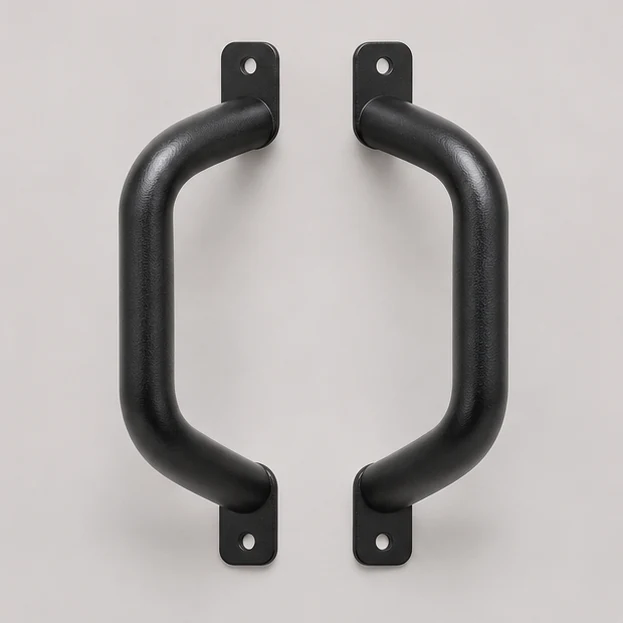

Floor & trim
Roof Strut Grab Handles
Part No. 53206
$74.99 USD
A pair of black grab handles adds a handhold on the inside of the roof supports.
Check mounting requirements
Requires drillable metal roof struts
Club Car Precedent · 2004–2016E-Z-GO RXV · 2008–2023E-Z-GO TXT Gas · 2008–2019Yamaha Drive Fleet · 2013–2016Yamaha Drive2 Fleet · 2017–2020
Check fit detailsRetailer sets final price, availability and shipping.
Will it fit?
| Model | Catalog years |
|---|---|
| Club Car Precedent | 2004–2016 |
| E-Z-GO RXV | 2008–2023 |
| E-Z-GO TXT Gas | 2008–2019 |
| Yamaha Drive Fleet | 2013–2016 |
| Yamaha Drive2 Fleet | 2017–2020 |
Requires roof struts that can accept the through-bolts shown in the Jake’s installation guide. Confirm the strut profile and check for wiring behind the proposed mounting points.
Installation notes
- Hold both handles on the inside of the roof supports and compare mounting height and hand clearance.
- Follow the Jake’s guide to locate and drill the mounting holes only after checking the strut is clear.
- Install the supplied fasteners as shown and check that each handle is secure before use.